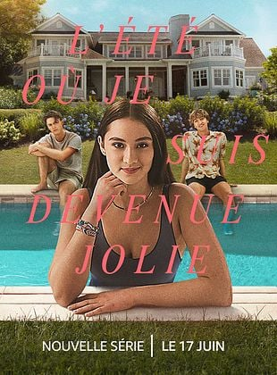
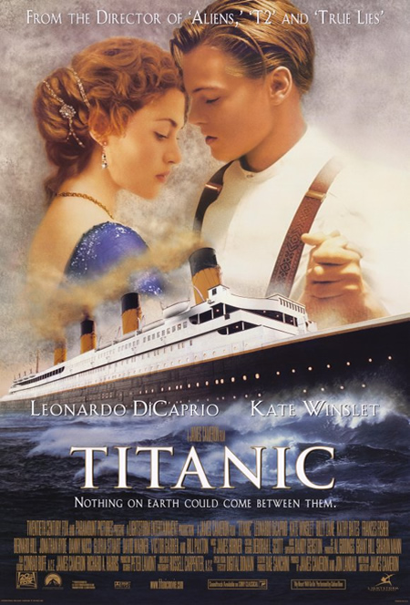

Sujet 2 : Séries et films de Romance (Émotion et cinéma)
Sujet 3 : Livres de New Romance (Lecture et passion)
Sujet 1 : La Formule 1
La Formule 1 est la catégorie reine du sport automobile. Ce n'est pas juste des voitures qui tournent en rond, c'est un concentré de technologie, de stratégie d'équipe et de courage de la part des pilotes qui atteignent plus de 300 km/h.
Les acteurs du paddock
Voici un aperçu de l'ambiance d'un Grand Prix, avec celui de Grande Bretagne en 2025 :
Sujet 2 : Séries et films de Romance
Ce genre explore les relations humaines, les coups de foudre et les obstacles que l'amour doit surmonter. Que ce soit des classiques ou des séries modernes sur les plateformes de streaming, j'adore l'esthétique et les émotions que ces histoires dégagent.


Une bande-annonce d'un film de romance sorti en 2025 :
Sujet 3 : Livres de New Romance
La "New Romance" est un genre littéraire très populaire en ce moment. Il met en scène des jeunes adultes face à des problématiques de vie concrètes (études, premier job, passé difficile) avec une tension romantique souvent très forte et addictive.